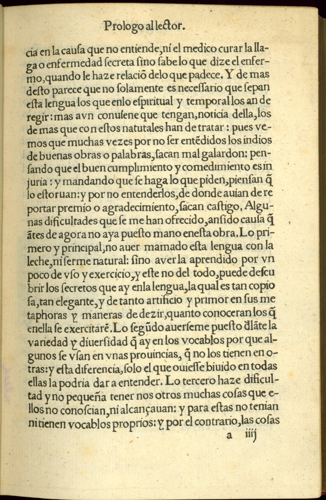

La evangelización de los nahuas


Alonso de Molina
Vocabulario de la lengua castellana y mexicana, (recto v verso)
Central Mexico, ca. 1540
Los frailes usaban el estudio y la alfabetización del náhuatl para encontrar maneras apropiadas de comunicar el mensaje cristiano. Diferencias culturales y lingüísticas, grandes obstáculos en el proceso de evangelización, dieron a los nahuas cierta flexibilidad para moldear las creencias y practicas cristianas a favor de sus propias necesidades religiosas y tradiciones culturales.
En este pasaje de su Vocabulario, el padre Alonso de Molina comenta algunas de las dificultades que encontró elaborando el primer diccionario impreso de español-náhuatl.
Newberry Library: Ayer 871 .A952 M7 1555